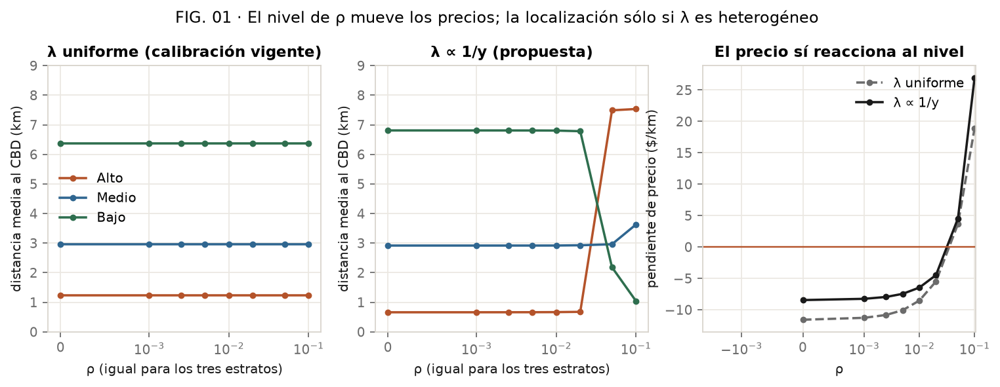
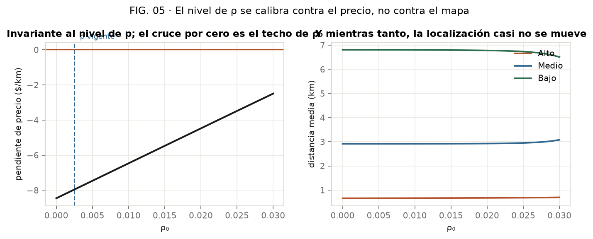
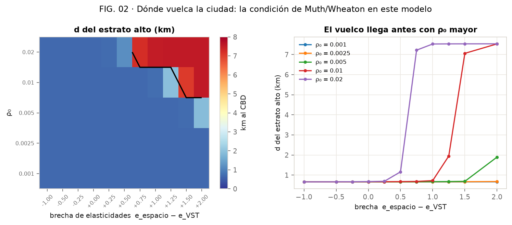
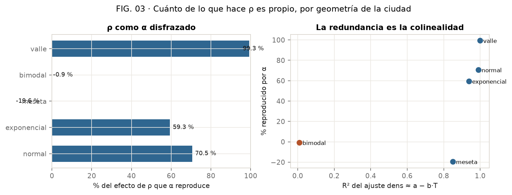
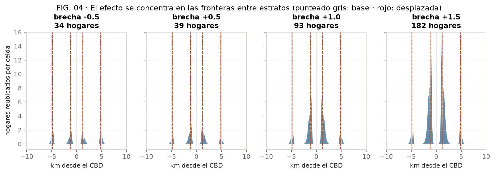
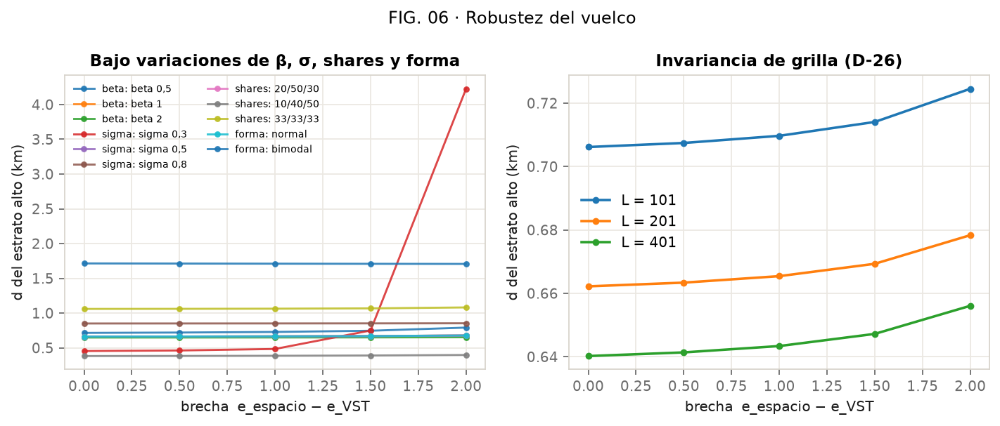

ρ es la penalización de densidad de la puja por suelo. Este informe mide qué puede y qué no puede hacer en el modelo implementado, cuánto de su efecto es en realidad α disfrazado, y qué valores dejan una asignación realista. La respuesta corta es que ρ no tiene un rango propio: lo que la localización identifica es una combinación de α, ρ y λ.
La pregunta de partida era: ¿cuál debería ser el rango de ρ, o las diferencias de ρ entre estratos, para que la asignación resulte realista?
ρ no tiene un rango propio identificable por la localización. Lo que el mapa identifica es un coeficiente efectivo por estrato que mezcla α, ρ y λ; infinitas parejas (α, ρ) dan la misma ciudad.
El nivel de ρ sí está acotado, pero por los precios. Por encima de ρ₀ ≈ 0,0425 el gradiente de renta se invierte y el suelo periférico pasa a valer más que el central: deja de ser un modelo de Alonso. El valor vigente, 0,0025, está 17 veces por debajo de ese techo.
Las diferencias entre estratos importan sólo por encima de cierto nivel. Con ρ₀ ≤ 0,005 la ciudad no vuelca ni con una brecha de elasticidades implausible de 2,0. Con ρ₀ = 0,02 vuelca con 0,75.
Y un resultado que no esperaba, que corrige una afirmación previa del repo: la colinealidad entre α y ρ no implica redundancia. La correlación entre distancia y densidad es −0,996, pero al construir el α equivalente sólo se reproduce el 70,5 % del efecto de ρ. A ρ le queda cerca de un 30 % de efecto propio. Ver §5.
La puja del estrato h por la parcela i es
con dens = S/Δx, la oferta de viviendas por km. Esa oferta es
exógena: se genera una vez y el equilibrio no la mueve. Y como
el mercado se vacía, la densidad realizada es idénticamente S/Δx
(D-32). ρ penaliza, entonces, un atributo fijo de la parcela.
La probabilidad de ganar depende de
b_h·(w_hi − ū_h − p_i). De ahí salen tres reglas que gobiernan
todo lo demás:
La regla 2 es la que explica AU-05: con λ uniforme, una ρ común hace que
ρ·dens/λ sea idéntico para los tres estratos en cada parcela, así
que se va entero al precio.
En las formas monocéntricas dens ≈ a − b·T. Sustituyendo en (1),
el término constante se absorbe y queda un solo coeficiente por
estrato:
Gana el centro quien tenga mayor κ. Y b es una tasa
de cambio concreta entre ρ y α: ρ entra en la asignación como si fuera una
rebaja de α de b·ρ. Medido en esta ciudad, b = 152,6
hogares/km por minuto, así que ρ = 0,0025 equivale a restarle 0,38 útiles/min
a α.
b depende de la geometría y de la población, porque
dens ∝ N. Medido: b/ΣH = 0,00424 constante para
ΣH = 36.000 y 108.000. No es una constante del modelo, es de la ciudad.
Para que ρ y λ signifiquen algo se los ata a elasticidades ingreso: la del valor del tiempo (e_t) y la de la demanda de espacio (e_s).
Así α/λ_h ∝ y^{e_t} —el valor del tiempo— y
ρ_h/λ_h ∝ y^{e_s} —la aversión a la densidad en dinero—. Con
e_s = e_t la ρ queda uniforme. Se usa α = 6,0 uniforme y
e_t = 1, que es la ec. (2.25) de Jara-Díaz: el valor
subjetivo del tiempo iguala la tasa salarial, y con horas iguales
w ∝ y.
Con eso, la condición de vuelco sale analítica. Poniendo
v_h = A·y^{e_t} y r_h = R·y^{e_s}, κ crece y luego
decrece, con máximo en
Si e_s ≤ e_t no hay vuelco. Si e_s > e_t, el
estrato con y > y* se va a la periferia. Es la condición
clásica de Muth/Wheaton escrita para este modelo.
| régimen | α | λ | ρ | rama del solver |
|---|---|---|---|---|
| R0 — calibración vigente | 6,5 / 6,0 / 5,5 | 1 · 1 · 1 | 0,0025 uniforme | forma cerrada |
| R1 — propuesta | 6,0 uniforme | 0,43 · 1,00 · 3,00 | ec. (3) | HEV |

| ρ (los tres) | d_alto | d_medio | d_bajo | Theil | hogares movidos | pendiente p ($/km) |
|---|---|---|---|---|---|---|
| 0 | 1,24 | 2,95 | 6,36 | 0,407 | 0 | −11,6 |
| 0,0025 (vigente) | 1,24 | 2,95 | 6,36 | 0,407 | 0 | −10,8 |
| 0,01 | 1,24 | 2,95 | 6,36 | 0,407 | 0 | −8,5 |
| 0,05 | 1,24 | 2,95 | 6,36 | 0,407 | 0 | +3,7 |
| 0,1 | 1,24 | 2,95 | 6,36 | 0,407 | 0 | +18,9 |
Distancias y Theil idénticos hasta el último dígito en todo el barrido;
max|ΔQ| se queda en 10⁻⁹, que es la tolerancia del solver. Es la
predicción P1, confirmada.
| ρ (los tres) | d_alto | d_medio | d_bajo | Theil | hogares movidos | pendiente p ($/km) |
|---|---|---|---|---|---|---|
| 0 | 0,66 | 2,92 | 6,81 | 0,939 | 0 | −8,5 |
| 0,0025 | 0,66 | 2,92 | 6,81 | 0,934 | 69 | −8,0 |
| 0,01 | 0,67 | 2,92 | 6,80 | 0,916 | 346 | −6,5 |
| 0,02 | 0,68 | 2,93 | 6,78 | 0,870 | 1.076 | −4,5 |
| 0,05 | 7,49 | 2,96 | 2,18 | 0,727 | 27.267 | +4,6 |
| 0,1 | 7,53 | 3,63 | 1,04 | 0,909 | 22.100 | +27,0 |
En el régimen lineal, alrededor de 28 hogares por cada 0,001 de ρ₀. Entre 0,02 y 0,05 hay un vuelco completo: el alto pasa de 0,66 a 7,49 km y el bajo de 6,81 a 2,18. Con ρ uniforme, sin ninguna heterogeneidad — la aporta λ, porque lo que entra en la puja es ρ/λ.
AU-05 decía que ρ uniforme no reasigna; se corrigió el 2026-09-02 agregando «si λ es uniforme». Lo que se ve acá es que la excepción no es marginal: con λ heterogéneo, una ρ uniforme suficientemente grande da vuelta la ciudad entera.

El plan proponía medir el gradiente como (p₁ₖₘ − p₁₀ₖₘ)/p₁ₖₘ.
Está mal: el nivel de p no está determinado por el
modelo —falta la cuarta condición de Alonso— así que un cociente no es
invariante a sumarle una constante. La pendiente sí. Se corrigió al
implementar.
De paso: el grad_p de la auditoría, normalizado por el rango,
se queda clavado en 1,000 en todo este barrido. Sólo indica el
signo, no la magnitud. Sirvió para detectar AU-11; no sirve para
calibrar.

| ρ₀ | brecha crítica e_s − e_t | lectura |
|---|---|---|
| 0,001 | — | no vuelca hasta brecha 2,0 |
| 0,0025 (vigente) | — | no vuelca hasta brecha 2,0 |
| 0,005 | — | no vuelca hasta brecha 2,0 |
| 0,01 | +1,50 | hace falta una brecha implausible |
| 0,02 | +0,75 | plausible: es el régimen interesante |
Con el ρ₀ vigente la ciudad no se da vuelta nunca en el rango explorado. El vuelco necesita a la vez un nivel alto de ρ y una brecha de elasticidades positiva. Ninguno de los dos solo alcanza.
La reducción de la §2.2 dice que el orden espacial debería seguir el orden de κ. Se cumple en 53 de 55 puntos de la grilla. Los dos que fallan están justo en el borde:
| ρ₀ | brecha | κ (alto / medio / bajo) | predicción de κ | medido |
|---|---|---|---|---|
| 0,005 | +2,00 | 4,31 / 5,24 / 1,97 | vuelca | no vuelca |
| 0,01 | +1,25 | 3,73 / 4,47 / 1,87 | vuelca | no vuelca |
En los dos, κ_alto queda apenas por debajo de κ_medio y el modelo real
resiste un poco más. κ es una aproximación de primer orden: ignora el
residuo dens − (a − b·T) y la asimetría de escala de ruido que
introduce el HEV. Predice el vuelco algo antes de lo que ocurre, nunca después.
Es una herramienta útil, no sólo una explicación. Calcular κ cuesta tres divisiones; correr el HEV cuesta segundos. Para explorar el espacio de parámetros, κ ubica la frontera y el solver la confirma.
AU-12 estableció que corr(T, dens) = −0,996 en la ciudad por
defecto, y de ahí el repo afirmaba que mover ρ heterogéneo es «al 99,6 %» mover
α en sentido contrario. La predicción de este plan, P3, decía lo mismo: que la
fracción no imitada sería ≈ 1 − R², o sea un 1 %.
Se midió construyendo el equivalente α′_h = α_h − b·ρ_h con ρ = 0
y comparando asignaciones contra la de ρ heterogénea:

dens ≈ a − b·T. La relación
existe pero no es la identidad: hace falta colinealidad exacta para
que α imite a ρ.
| forma de la oferta | b | R² | hogares que mueve ρ | residuo | % que α reproduce |
|---|---|---|---|---|---|
| normal (default) | 152,6 | 0,991 | 4.984 | 1.469 | 70,5 % |
| exponencial | 170,7 | 0,939 | 9.315 | 3.790 | 59,3 % |
| meseta | 285,5 | 0,851 | 6.356 | 7.602 | −19,6 % |
| bimodal | 13,9 | 0,010 | 5.883 | 5.938 | −0,9 % |
| valle | −180,0 | 1,000 | 3.436 | 23 | 99,3 % |
En la ciudad por defecto α reproduce el 70,5 %, no el 99,6 %. La correlación no es la redundancia: 0,996 mide cuánta varianza de dens explica T, no cuánto del efecto de ρ reproduce α. El residuo pesa 0,9 % en varianza y cerca del 30 % en resultado, porque la subasta amplifica diferencias chicas — que es exactamente lo que dice AU-10.
Sólo en valle, donde la colinealidad es exacta
(R² = 1,000), α imita a ρ al 99,3 %. En meseta y
bimodal el «equivalente» es peor que no corregir: ahí
b no significa nada y el porcentaje sale negativo.
Corregido en AU-12, en §7.8 del informe de uso de suelo y en el docstring de
_f.
La consecuencia práctica es favorable para ρ: a ρ le queda cerca de un 30 % de efecto propio incluso en la geometría más colineal. No es un parámetro decorativo. Lo que sigue siendo cierto es que no se puede estimar por separado de α a partir de datos de localización: dos parámetros compitiendo por un canal y medio.

| brecha | hogares movidos | % en 20 celdas | % en 30 celdas | fronteras (km) |
|---|---|---|---|---|
| −0,5 | 34 | 69,3 % | 86,1 % | 1,22 · 4,84 |
| +0,5 | 39 | 71,9 % | 86,1 % | 1,22 · 4,84 |
| +1,0 | 93 | 76,5 % | 87,0 % | 1,22 · 4,84 |
| +1,5 | 182 | 79,6 % | 89,0 % | 1,22 · 4,84 |
Entre 69 % y 80 % del movimiento cae en 20 de 201 celdas. Es el mismo patrón que encontró el informe del HEV: lo que se juega en las fronteras es la segregación, y ahí es donde un error de especificación se paga.
Las fronteras no se mueven en estos casos. Ojo con la lectura: se ubican por el estrato dominante celda a celda, y la resolución es de 100 m, así que un corrimiento menor a una celda no se registra. Lo que cambia es la composición alrededor de la frontera, no su posición.
| configuración | Auto | Metro | Bici | Caminata | iter | seg |
|---|---|---|---|---|---|---|
| R0 vigente (= pineado) | 16,95 | 32,79 | 22,84 | 7,98 | 7 | 0,9 |
| R1 brecha 0, ρ₀ 0,0025 | 16,83 | 34,16 | 22,38 | 7,18 | 8 | 4,7 |
| R1 brecha 0, ρ₀ 0,01 | 16,80 | 34,09 | 22,45 | 7,19 | 8 | 3,6 |
| R1 brecha +0,5 | 16,80 | 34,10 | 22,44 | 7,17 | 8 | 4,2 |
| R1 brecha +1,0 | 16,80 | 34,09 | 22,45 | 7,18 | 8 | 4,1 |
| R1 brecha +1,5 | 16,80 | 34,09 | 22,45 | 7,18 | 8 | 4,1 |
Rama equilibrio, la única que usa uso de suelo. R0 reproduce el
valor pineado exacto, lo que valida el harness. La rama original
da 17,36 · 27,87 · 24,35 · 10,92 idéntica en los seis
casos: no hay fuga de acoplamiento.
Dos lecturas. Primera: el arrastre lo produce λ, no ρ. Todas las variantes R1 dan el mismo reparto (metro 34,09–34,16) sin importar ρ ni la brecha; el salto de 32,79 a ~34,1 es el cambio de régimen. Segunda: el costo pasa de 0,9 s a ~4 s, un factor de 4,5×, y es el precio de despachar al HEV. En Pyodide hay que multiplicarlo otra vez.
La pregunta es si la frontera de vuelco depende de detalles de la configuración. Se repitió el barrido de brechas con ρ₀ = 0,0025 variando de a una: la escala del logit β, la compacidad σ, la composición de estratos, la forma de la oferta y la resolución de la grilla.

| variación | brecha 0 | +0,5 | +1,0 | +1,5 | +2,0 |
|---|---|---|---|---|---|
| β = 0,5 | 0,72 | 0,72 | 0,73 | 0,75 | 0,79 |
| β = 1 (base) | 0,66 | 0,66 | 0,67 | 0,67 | 0,68 |
| β = 2 | 0,65 | 0,65 | 0,65 | 0,65 | 0,65 |
| σ = 0,3 (compacta) | 0,45 | 0,46 | 0,48 | 0,75 | 4,23 ✗ |
| σ = 0,8 (dispersa) | 0,85 | 0,85 | 0,85 | 0,85 | 0,85 |
| shares 10/40/50 | 0,38 | 0,38 | 0,39 | 0,39 | 0,40 |
| shares 33/33/33 | 1,06 | 1,06 | 1,06 | 1,07 | 1,08 |
| forma bimodal | 1,71 | 1,71 | 1,71 | 1,71 | 1,71 |
| L = 101 | 0,71 | 0,71 | 0,71 | 0,71 | 0,72 |
| L = 401 | 0,64 | 0,64 | 0,64 | 0,65 | 0,66 |
Distancia media del estrato alto, en km. ✗ marca el único punto donde el orden entre estratos se invierte.
Con σ = 0,3 la oferta se concentra cerca del centro, así que el perfil de
densidad es más empinado y ρ·dens tiene más agarre: b
crece y con él el descuento b·ρ_h sobre α. Es coherente con la
ec. (2), no una anomalía. La compacidad de la ciudad desplaza la
frontera de vuelco, y por eso el techo de ρ₀ de §3.3
hay que leerlo como propio de esta σ.
En bimodal la distancia del estrato alto es 1,71 km en las cinco
brechas, sin moverse un dígito. No es que ρ no haga nada: es que ahí
b = 13,9 contra 152,6 en normal, porque la densidad ya no
es monótona en la distancia. El descuento b·ρ_h se vuelve
despreciable y κ deja de depender de ρ. La misma geometría que separa
a α de ρ (AU-12) es la que desactiva el canal de vuelco.
Refinar de 101 a 401 celdas mueve d_alto de 0,71 a 0,64 km, un 10 %. La invariancia de D-26 se sostiene en lo que importa —el orden y la magnitud no cambian— pero no es exacta a esta escala: 0,66 km son 6,6 celdas con L = 201 y 3,3 con L = 101, así que se está midiendo cerca del límite de resolución.
Juntando los bordes que salieron de las mediciones, y con los criterios eliminatorios del plan:
| criterio | qué acota | borde medido | estado |
|---|---|---|---|
| C1 orden alto→bajo | la brecha, dado ρ₀ | ρ₀ ≤ 0,005: cualquier brecha ≤ 2,0 · ρ₀ = 0,01: brecha < 1,50 · ρ₀ = 0,02: brecha < 0,75 | medido |
| C2 gradiente de Alonso | el nivel ρ₀ | ρ₀ < 0,0425 con σ = 0,5; baja con ciudades más compactas (§8.1) | medido |
| C3 sin corner solution | el nivel y la brecha | no se activa dentro de C1 y C2 | medido |
| C4 mezcla en fronteras | β·α más que ρ | mezcla 0,03–0,25 es hipótesis, no dato | falta ancla |
| C5 segregación tipo Santiago | β·α y la brecha | Theil medido 0,41 (R0) y 0,94 (R1); sin referencia | falta ancla |
| C6 gradiente de renta plausible | ρ₀ dado α | curva completa en Fig. 05; sin objetivo | falta ancla |
| C7 costo | el régimen | R1 cuesta 4,5× | medido |
Con λ ∝ 1/y y α = 6,0 uniforme, ρ₀ entre 0 y ~0,04 (por C2) y brecha de elasticidades entre −1 y +0,75 (por C1, conservadoramente, tomando el ρ₀ más exigente del rango) dejan una asignación con el orden correcto y el gradiente de Alonso en pie. El ρ₀ vigente, 0,0025, está cómodamente adentro con un margen de 17× hasta el techo de C2 — y eso vale en los dos regímenes, porque el techo lo fija el precio y el precio reacciona igual con λ uniforme que con λ ∝ 1/y (Fig. 01, panel derecho). Ojo: la calibración vigente tiene λ uniforme, así que la «brecha» no está definida para ella; es un eje del régimen propuesto.
| # | predicción | veredicto | el número que lo decide |
|---|---|---|---|
| P1 | ρ uniforme + λ uniforme ⇒ Q invariante | confirmada | max|ΔQ| = 1,2·10⁻⁹ en todo el barrido |
| P2 | ρ uniforme + λ heterogéneo ⇒ Q cambia | confirmada | 69 → 1.076 → 27.267 hogares |
| P3 | fracción no imitada por α ≈ 1 − R² | refutada | 29,5 % contra el 0,9 % predicho |
| P4 | el orden espacial sigue el orden de κ | confirmada con matiz | 53/55; las 2 fallas son empates en el borde |
| P5 | ρ₀ fija el gradiente de precios | confirmada | pendiente lineal, +199 $/km por unidad de ρ₀ |
| P6 | bajo HEV el alto queda más disperso de lo que le toca por κ | confirmada | ver abajo |
| P7 | escalar (α, ρ) por k y β por 1/k deja Q idéntico | confirmada | max|ΔQ| = 1,2·10⁻⁹ hasta k = 1.000 |
Sobre P6: con λ = (0,43 · 1,00 · 3,00), la escala de ruido del
estrato alto es θ = 1/(β·λ) = 2,33, contra 1,00 del medio y 0,33
del bajo. El alto tiene 2,3 veces más dispersión idiosincrática
que el medio y 7 veces más que el bajo, aunque su κ sea el más alto. Es una
asimetría que la forma cerrada no puede producir —ahí todos comparten escala— y
es un efecto propio del HEV, no un artefacto.
Tres anclas empíricas, y ninguna se puede inventar sin arruinar el ejercicio:
| ancla | para qué | por qué no está |
|---|---|---|
| Elasticidad ingreso de la demanda de espacio | fijar la brecha en vez de barrerla | Jara-Díaz es de transporte; Martínez no publica valores numéricos de ningún parámetro (verificado en las 296 páginas) |
| Índice de segregación de Santiago a escala comparable | C5, y de paso calibrar β·α | hace falta un valor publicado y su definición exacta |
| Gradiente de renta observado | C6: invertir la curva de Fig. 05 y fijar ρ₀ | ídem |
Todo esto vale para un ρ que penaliza una densidad exógena (D-32). En Martínez la atractividad es endógena y genera cascadas; acá no. Un ρ calibrado contra datos reales estaría absorbiendo, sin decirlo, el efecto de un mecanismo que el modelo no tiene. Es una limitación declarada, no un error, pero condiciona cuánto vale la pena afinar el número.
| referencia | qué se tomó | dónde se usa |
|---|---|---|
| Martínez Concha, F. J. (2018). Microeconomic Modeling in Urban Science. Academic Press / Elsevier. ISBN 978-0-12-815296-6. |
Ec. (4.2) y (4.3), p. 77: la utilidad indirecta lineal y la disposición a
pagar, con b_h = λ_h·μ_h y «it is expected that λ_h
decreases with income».Ec. (4.26) y (4.27), p. 86: la probabilidad de la subasta y el precio como máximo de las pujas. P. 242: la ambigüedad e_h = β·λ_h contra e_h = β,
y que la identificación de los parámetros de densidad viene de la
variabilidad espacial.P. 243: la ley de escala R = β·ln N como condición para
estimar β.Pp. 8, 29, 116: las externalidades de localización y los «cambios en cascada». |
§2, §5, §10; D-31, D-32, AU-12, AU-13 |
| Jara-Díaz, S. (2007). Transport Economic Theory. Elsevier, 1ª ed. Universidad de Chile, Santiago. |
Ec. (2.25) y (2.28): SVTTS = (∂V/∂t)/(∂V/∂c) = w — el valor
subjetivo del tiempo iguala la tasa salarial en el marco goods/leisure,
«given its endogenous income version». Es el ancla de
e_t = 1.P. 64: el valor del tiempo como recurso es μ/λ.P. 113: usar la valoración privada del tiempo para priorizar proyectos favorece proporcionalmente a los grupos de altos ingresos. |
§2.3, §7 |
| Jara-Díaz, S. R. y Videla, J. (1989). «Detection of income effect in mode choice: theory and application». Transportation Research 23B, 393–400. |
La evidencia empírica de que la utilidad marginal del ingreso
decrece con el ingreso, estimada sobre un corredor de
ingresos medios-bajos en Santiago. Es lo que sostiene
λ_h ∝ 1/y_h.
|
§2.3 |
| Train, K. Discrete Choice Methods with Simulation, cap. 4 «GEV», §4.5. | La formulación del HEV y su cuadratura, que es la rama que usa el régimen R1 de este informe. | §2.4, §7 |
Subsecretaría de Evaluación Social (2026).
Precios Sociales — Reporte anual 2026. División de Evaluación
Social de Inversiones, Sistema Nacional de Inversiones,
www.sni.gob.cl, 31 de marzo de 2026.
|
Cap. 2: el VST oficial y, sobre todo, que «tradicionalmente, aduciendo regresividad, se ha desestimado la distinción por ingresos de las personas». Es por qué no se usó para calibrar α por estrato: es un valor normativo, no conductual. | §10 |
Estas aparecen citadas dentro de los libros de arriba y se mencionan en el
informe o en la documentación del repo, pero no están en
reference/ y no se pudo comprobar su texto:
Los PDF viven en reference/, que está en .gitignore
por licencia. Las citas textuales de este informe se extrajeron de esos
archivos y se transcribieron verbatim; los números de página son los del
libro, no los del PDF.
| id | qué dice | relación con este informe |
|---|---|---|
| D-08 | Mover λ ≡ reescalar (α, ρ) por 1/λ bajo la forma cerrada | es la raíz de la no-identificación que §2.2 formaliza en κ |
| D-26 | Unidades físicas: T en minutos, densidad en hogares/km | verificado en §8.3 |
| D-31 | beta significaba cosas distintas a cada lado del despacho | gana el respaldo de Martínez p. 242 |
| D-32 | ρ·dens es exógeno: no hay externalidad de localización | es el supuesto de partida de todo este análisis |
| AU-05 | ρ uniforme no reasigna (si λ es uniforme) | §3 lo confirma y lo extiende: con λ ∝ 1/y, ρ uniforme da vuelta la ciudad |
| AU-09 | Convergencia lenta en configuraciones asimétricas | es el costo de 4,5× de §7 |
| AU-10 | Sensibilidad muy alta a diferencias pequeñas de α | explica por qué el residuo del 0,9 % produce el 30 % del efecto (§5) |
| AU-11 | El gradiente de renta estaba invertido; ρ recalibrado a 0,0025 | §3.3 cuantifica el techo que evita repetirlo |
| AU-12 | α y ρ colineales en la geometría base | corregido por este informe: la correlación no es la redundancia |
| AU-13 | El nivel de α no está identificado, sólo β·α | confirmado en E0 (predicción P7) |